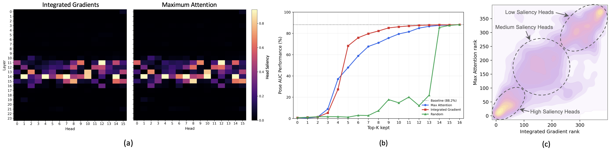
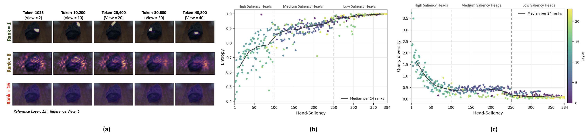
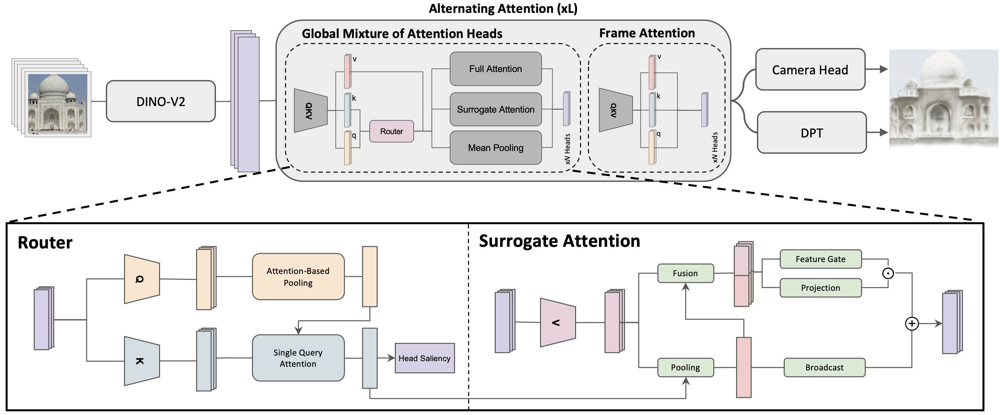
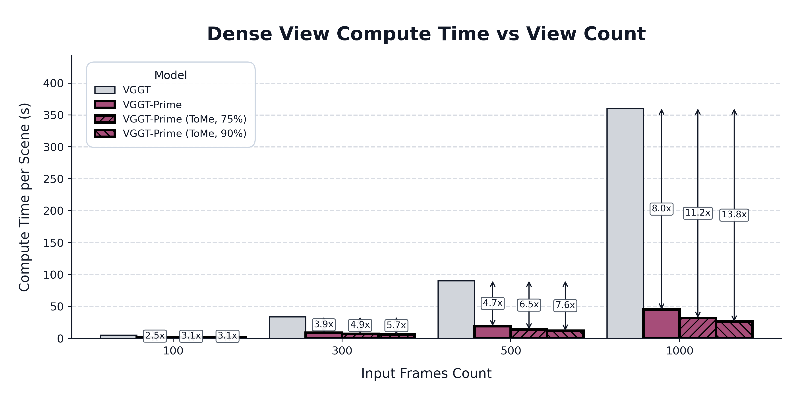

Abstract
Feed-forward visual geometry models such as the Visual Geometry Grounded Transformer (VGGT) have recently enabled direct 3D reconstruction from multi-view images. Despite their promising performance, these models scale quadratically with the number of input views due to their global attention mechanism, resulting in substantial latency for long sequence inputs. There have been some recent efforts to accelerate VGGT, but they primarily focus on reducing token redundancy through token merging or key/value sparsification. Our work resolves this bottleneck from a different perspective by investigating architectural redundancy in visual geometry transformers.
We show that the multi-head attention modules in VGGT’s global-attention layers contain substantial architectural redundancy, with only a subset of heads carrying critical geometric information. In light of this observation, we propose VGGT-Prime, a compute-adaptive mixture-of-heads model that resolves this redundancy to accelerate visual geometry transformers while maintaining competitive reconstruction quality. The key idea of VGGT-Prime is to estimate the appropriate computation level for each global-attention head using a lightweight router and then dynamically assign each head to different computation modes, including mean pooling approximation, linear complexity surrogate attention, or exact softmax attention.
Extensive experiments on multiple datasets demonstrate that VGGT-Prime can achieve an 8× inference speedup over VGGT while maintaining competitive performance on camera pose, depth, and point-cloud predictions. We further show that VGGT-Prime is complementary to existing acceleration methods, such as token merging, further improving inference speed by up to 14× over VGGT.
Key Takeaways
A new axis of efficiency.
Address architectural redundancy by adapting the computation of individual attention heads.The right computation for each head.
A lightweight router selects mean pooling, learned surrogate attention, or exact attention.Up to 8× faster inference.
Scale to 1,000-frame inputs while maintaining competitive reconstruction quality.Complementary to token merging.
Combine both approaches for up to 13.8× speedup in the scaling experiment.
Architectural Redundancy
VGGT’s global-attention modules contain 384 heads across 24 layers. Their contributions to geometry are far from uniform: a small subset carries the most important information. This creates an opportunity to allocate computation according to each head’s role.

Different heads, different attention patterns
High-saliency heads produce focused, query-dependent attention. Medium-saliency heads share selective patterns across queries, while low-saliency heads distribute attention almost uniformly. These patterns motivate three levels of computation.

Compute-adaptive mixture-of-heads
A lightweight, input-dependent router estimates head saliency and selects the appropriate computation mode for each global-attention head:
- Mean pooling approximates diffuse, low-saliency attention.
- Learned surrogate attention approximates selective, largely shared attention with linear complexity. A pooled context and a token-dependent residual correction preserve useful variation.
- Exact softmax attention preserves the focused, query-dependent interactions of highly salient heads.

Reconstruction Quality and Efficiency
VGGT-Prime maintains competitive reconstruction quality while reducing inference time. On ScanNet with 500 frames, it reduces runtime from 90.1 s to 19.2 s with comparable Chamfer Distance. On dense 7-Scenes, it matches VGGT’s reported CD; on ETH3D, it achieves the best CD among these methods.
7-Scenes Sparse
| Method | CD ↓ | Time (s) ↓ | Speedup ↑ |
|---|---|---|---|
| VGGT | 0.118 | 4.5 | 1.00× |
| FastVGGT | 0.109 | 2.7 | 1.67× |
| SparseVGGT | 0.134 | 2.6 | 1.73× |
| HTTM | 0.121 | 3.8 | 1.18× |
| HeSS | 0.126 | 2.8 | 1.61× |
| VGGT-Prime | 0.121 | 1.9 | 2.37× |
7-Scenes Dense
| Method | CD ↓ | Time (s) ↓ | Speedup ↑ |
|---|---|---|---|
| VGGT | 0.115 | 38.1 | 1.00× |
| FastVGGT | 0.115 | 14.2 | 2.68× |
| SparseVGGT | 0.139 | 16.2 | 2.35× |
| HTTM | 0.117 | 12.1 | 3.15× |
| HeSS | 0.168 | 18.4 | 2.07× |
| VGGT-Prime | 0.115 | 9.8 | 3.89× |
ScanNet 100
| Method | CD ↓ | Time (s) ↓ | Speedup ↑ |
|---|---|---|---|
| VGGT | 0.421 | 4.9 | 1.00× |
| FastVGGT | 0.416 | 2.8 | 1.75× |
| SparseVGGT | 0.425 | 2.6 | 1.88× |
| HTTM | 0.420 | 4.0 | 1.23× |
| HeSS | 0.418 | 2.9 | 1.69× |
| VGGT-Prime | 0.422 | 2.0 | 2.45× |
ScanNet 500
| Method | CD ↓ | Time (s) ↓ | Speedup ↑ |
|---|---|---|---|
| VGGT | 0.442 | 90.1 | 1.00× |
| FastVGGT | 0.437 | 28.4 | 3.17× |
| SparseVGGT | 0.441 | 34.2 | 2.63× |
| HTTM | 0.433 | 22.8 | 3.95× |
| HeSS | 0.435 | 37.4 | 2.41× |
| VGGT-Prime | 0.441 | 19.2 | 4.69× |
ETH3D
| Method | CD ↓ | Time (s) ↓ | Speedup ↑ |
|---|---|---|---|
| VGGT | 1.07 | 0.39 | 1.00× |
| FastVGGT | 1.24 | 0.42 | 0.93× |
| SparseVGGT | 1.89 | 0.51 | 0.76× |
| HTTM | 1.41 | 0.73 | 0.53× |
| HeSS | 1.67 | 0.57 | 0.68× |
| VGGT-Prime | 0.99 | 0.38 | 1.03× |
Reading the tables. Summed Chamfer Distance (CD ↓); lower is better. Speedup is VGGT runtime divided by each method’s runtime, calculated from the reported values and rounded to two decimals. Bold denotes the lowest runtime within each dataset, including ties; plum shading identifies VGGT-Prime.
Evaluation. Timings measure synchronized full-model inference, including the encoder, aggregator, and prediction heads, using the median after three warmup iterations. All methods use the same hardware and input resolution, BF16, and batch size 1. The VGGT baseline uses the accelerated implementation introduced by MapAnything. HTTM and HeSS are PyTorch reimplementations.
Backbones and Scaling with Token Merging
Across visual geometry backbones
Prime also applies to VGGT-Ω, π³, and Depth Anything 3 (DA3). On sparse 7-Scenes, the Prime variants preserve the reported CD while providing approximately 2× faster inference.
| Backbone | CD ↓ | Time (s) ↓ | Speedup ↑ | ||
|---|---|---|---|---|---|
| Baseline | + Prime | Baseline | + Prime | ||
| VGGT-Ω | 0.10 | 0.10 | 2.9 | 1.6 | 1.81× |
| π³ | 0.11 | 0.11 | 3.3 | 1.5 | 2.20× |
| DA3 | 0.10 | 0.10 | 3.5 | 1.5 | 2.33× |
Sparse 7-Scenes evaluation. Speedup is relative to each original backbone, calculated from the reported runtimes. The teaser’s backbone plot reports a separate ScanNet-500 evaluation.
Architectural efficiency meets token efficiency
Prime adapts how attention heads compute; token merging reduces token redundancy. Combining the two improves long-sequence scaling further. At 1,000 frames, the reported speedup over VGGT rises from 8.0× for Prime to 11.2× and 13.8× with 75% and 90% token-merging ratios, respectively.
- VGGT-Prime
- 8.0×
- Prime + ToMe, 75%
- 11.2×
- Prime + ToMe, 90%
- 13.8×
